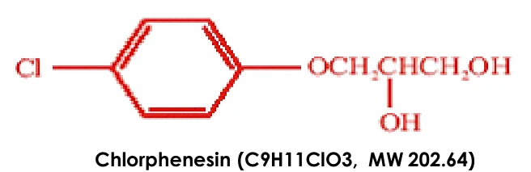
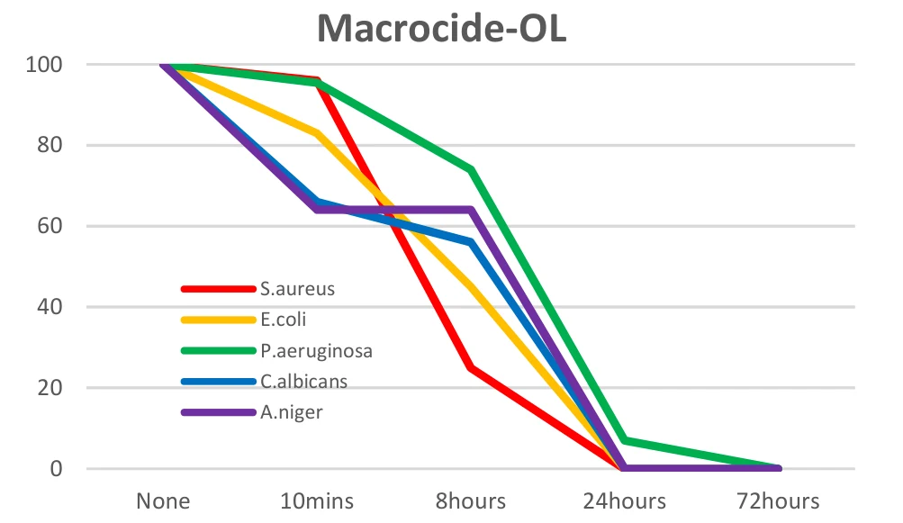
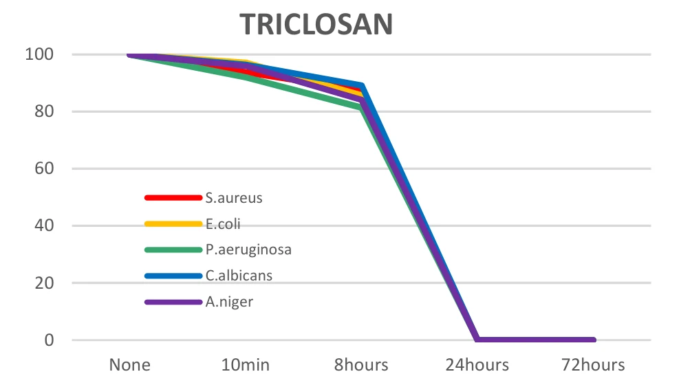

HOME
HOME- 원료소개
- 화장품원료
- Macrocide-OL
Ingredient research
Macrocide-OL
고순도로 정제한 무취의 방부 원료
01 / Overview & Strengths
개요 & 특장점
- Paraben대체제로 새롭게 부상하는 방부 원료 입니다.
- 고순도로 정제된 무취의 방부제이며, 박테리아와 진균류, 곰팡이에 효과적으로 작용합니다.
※ 자세한 자료는 직접 문의 부탁드립니다.
Product features / Product Strengths
- 무취
- 방부효과
- 다양한 적용범위 (스킨케어, 메이크업, 헤어케어 등)
02 / Technical Information
기술 자료
원료 기본 규격 및 제품 카탈로그
- INCI Name
- Chlorphenesin
- CAS No.
- 104-29-0
- M.O.Q.
- 10KG
- Pack Size
- 10KG
- Appearance
- Powder
- Dosage
- Max 0.3%
03 / Research Data
기타 데이터
Introduction
Chlorphenesin은 보존 · 항균 성분으로, 세균 · 곰팡이 · 효모에 작용합니다. 퍼스널 케어 업계에 새롭게 등장한 보존제 중 하나이며, 제약 업계에서는 오랫동안 널리 쓰여 왔습니다.
Characteristics of Chlorphenesin
- 냄새가 없는 흰색 결정 분말입니다.
- 적합한 pH 범위는 3 ~ 9입니다.
- 다른 보존제와 함께 쓰면 전체 보존력이 높아집니다. 세균 · 곰팡이 증식을 폭넓게 막아 다른 보존 성분과 시너지를 냅니다.
- 크림 · 로션 등 에멀전, 마스크, 젤, 수성 · 알코올 용액, 스프레이, 스틱, 세럼, 토닉, 메이크업(아이라이너, 마스카라 등), 샴푸, 컨디셔너, 폼의 미생물 보존에 적합합니다.

Anti-microbial efficacy test — Macrocide-OL은 Triclosan처럼 짧은 시간 안에 항균 활성을 나타냅니다.

S.aureus · E.coli · P.aeruginosa · C.albicans · A.niger 생존율 변화

같은 조건의 Triclosan 결과 (Test : Macrocare)
Solubility of Macrocide-OL — 용매별 용해도
| 용매 (Solvent) | 용해도 (Solubility) |
|---|---|
| 정제수 De-ionized water | 1% 미만 용해 |
| 100% 에탄올 100% ethanol | 용해 |
| 50% 에탄올 50% ethanol | 용해 |
| 부틸렌글라이콜 Butylene glycol | 용해 |
| 프로필렌글라이콜 Propylene glycol | 용해 |
| 글리세롤 Glycerol | 용해 |
| 실리콘 오일 Silicone oil | 불용 |
| 올리브 오일 Olive oil | 불용 |
| 계면활성제 Sodium Laureth Sulfate | 1% 미만 용해 |
원료 품질 시험 항목 및 기준
- Appearance
- White to pale yellow crystal
- Odor
- Almost odorless
- Solubility
- Water <10g/l>
- Identification
- IR Spectrum
- Assay
- Min. 99.0%
- pH (1→100)
- 6.0 ~ 8.0
- Loss on drying
- Max. 1.0%
- Residue on ignition
- Max. 0.1%
- Melting point
- 78 ~ 81℃
- Heavy metals
- Max. 20ppm
- Arsenic
- Max. 2ppm
- Microbial count
- Max. 102 cfu/g